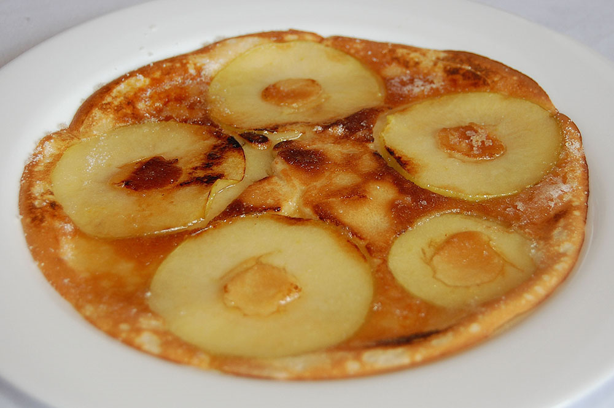

Errores típicos en la preparación de verduras
Publicado el 13/06/2017Siempre me quedo asombrado por la cantidad de gente que profesa un desagrado tan grande por las verduras, hasta el punto de no comer, fuera de la comida rápida, nada de verduras en absoluto. Pero ese asombro se me fue cuando fui a la casa de un amigo y me sirvieron una zanahoria junto con la carne... servida sin aceite, ni sal, y para colmo le faltaban por lo menos 5 minutos de cocción. O aquella vez que fui a una pizzeria, pedí pizza a las hierbas y me pusieron una gran cantidad de albahaca completamente seca y sin condimentar encima. Si condimentamos y nos tomamos cuidado en la preparación de la carne, el pescado o el arroz, ¿por qué será que las verduras se tratan de forma diferente? Una causa posible es la cultura que se ha desarrollado sobre las verduras, que por naturaleza, son "feas", y los cocineros están mentalizados al cocinar de que independientemente de la preparación, nunca van a conseguir la misma atracción generada por otras comidas más populares. Tal vez me dirán que condimentar es "tapar" el sabor de la verdura con otros ingredientes. Pero vamos a ver, ¿quién se comería un trozo de carne solo, tal como fue sacado del animal? La preparación y el aderazado son la clave de la cocina moderna. También, con trabajos que llevan cada vez más tiempo en la cultura moderna, la falta de tiempo para cocinar en casa y por ende, la carencia total de experiencia en la cocina, nos llevan a comer, a regañadientes, una papa o zanahoria con la misma preparación que le daríamos si fueramos a alimentar a una vaca o un caballo. Por eso, y para fomentar su inclusión en la dieta diaria de todas las personas (que después vienen los problemas de salud!), he decidido dejarles este enlace a un artículo encontrado en internet con recetas para que las hagan y descubran el verdadero sabor de estos nobles alimentos:
50 recetas ricas para comer más verduras
Comentar
Comentarios

Crepes de Manzana Acaramelados
Publicado el 19/06/2017
Esta receta la conocí hace mucho tiempo en un cumpleaños de una tía abuela mía. Me gustó muchísimo y por eso hoy la comparto con ustedes. Esta versión lleva caramelo encima, que le da ese característico crujido al morder tan satisfactorio. A mí me gusta comerlos tibios o calientes, recién sacados del sartén, pero se pueden comer fríos y con crema. Que los disfruten!
Ingredientes:
- 2 manzanas verdes
- 2 huevos
- 2 tazas de leche
- 1 taza de harina
- 50 gramos de manteca
- 2 tazas de azúcar
- 2 tazas de agua
- Escencia de vainilla c/n
- Una pizca de sal
Preparación:
Verter la leche y los huevos en un bol. Batir hasta desarmar los huevos y que quede una mezcla uniforme. Aparte, crear el caramelo en un sartén con la otra taza de azúcar y agregar al caramelo las manzanas picadas en trozos. Para realizar los panqueques, vamos volcando la preparación en porciones en otro sartén, y cuando se dore, dar la vuelta al crepe y agregar parte de las manzanas con caramelo. Presionar con una cuchara para que las manzanas de peguen al crepe, y sacarlo con una espátula cuando esté cocido. Repetir hasta que se nos acabe la preparación. Servir calientes o tibios y con crema.
Comentar
Comentarios